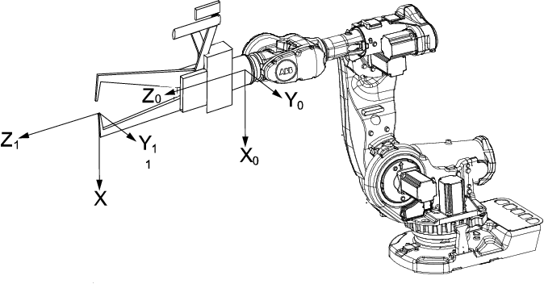

| 编程和测试 - 工具 | ||
| 编辑工具数据 | ||
| 工具数据 | 使用值设置功能来设置工具的中心点位置和物理属性，如重量和重心。 该操作也可使用服务例行程序 LoadIdentify 自动完成。请参阅运行服务例行程序 或 LoadIdentify，载荷测定服务例行程序等章节。 | ||||||||||||||||||||||||||||||||
| 显示工具数据 | 本节介绍如何显示工具数据。
| ||||||||||||||||||||||||||||||||
| 测量工具中心点 | 定义工具中心点 TCP 的最简单方式通常是使用预定义方法，详情请参阅定义工具框 。如果您使用此方法，则无需写入任何 tframe 数值，因为此方法已提供这些数值。 如果您已具有工具的测量值，或出于某些原因想手动测量数值，则这些数值可以输入至工具数据中。 
| ||||||||||||||||||||||||||||||||
| 编辑工具定义 |
|